Editorial explainer · official sourcesmedium
NIS2 in Italy: who is really in scope, since when, and why it reaches suppliers too
Not an attack, but the perimeter within which attacks are managed. The NIS2 directive was transposed in Italy by Legislative Decree 138/2024, in force since 16 October 2024. It defines who the "essential" and "important" entities are, what they must do on risk management and incident notification, and how accountability rises to top management. The less obvious point is the cascade onto the supply chain: many companies not directly regulated find the obligations on them because they supply an entity that is.

An explainer, not the attack of the day
This piece does not tell a breach: it tells the frame within which, in Italy, breaches are to be prevented and reported. It is worth doing because nearly every attack dossier we publish eventually runs into the same practical question — who do you report it to, by when, and who is accountable? Since 2024 the answer has a precise name: NIS2, and in Italy the decree that transposes it.
What changed, and since when
Directive (EU) 2022/2555, known as NIS2, replaced the first NIS framework of 2016 and raised the common European bar: it widens scope to eighteen critical sectors, mandates risk-management measures and notification of significant incidents, and introduces direct accountability of management bodies. Member States had to transpose it by 17 October 2024.
Italy did so with Legislative Decree No. 138 of 4 September 2024, published in the Official Gazette on 1 October 2024 and in force since 16 October 2024. The national competent authority is the National Cybersecurity Agency (ACN), within which CSIRT Italia handles incident response.
- 16 October 2024In force
Legislative Decree 138/2024 transposes NIS2 in Italy.
- 1 Dec 2024 - 28 Feb 2025Registration
Window to register on the ACN platform and self-assess.
- By April 2025Classification
ACN notifies registrants of the outcome: essential, important, or out of scope.
Essential, important, or out of scope
NIS2 distinguishes essential from important entities, based on sector and size. Italy's mechanics ran through a concrete step: entities in scope had to register on the ACN platform in a window open from 1 December 2024 to 28 February 2025, declaring their characteristics. On that basis the Agency then communicates the classification. This is not a bureaucratic detail: the category determines the intensity of obligations and the supervision-and-sanctions regime.
The substantive obligations are two families. On one side, risk-management measures: a minimum set covering risk-analysis and systems-security policies, incident handling, business continuity and backup, supply-chain security, basic hygiene and training, use of cryptography and access control. On the other, notification duties: the directive provides for an early warning, followed by an incident notification and a final report, on the deadlines set by the NIS2 framework and implemented nationally.
The less obvious point: the cascade onto suppliers
The part that surprises those who think they are outside the perimeter is the supply chain. The obligations of essential operators do not stay within their walls: they flow to suppliers, because the security of a regulated entity depends on that of whoever provides it software, managed services, connectivity. A company not directly regulated may therefore have to demonstrate security measures by contract, because it serves a client who in turn must comply with NIS2. Knowing the institutional perimeter, in this sense, is not a formality: it defines who to contact during an incident and which obligations actually apply.
What to verify at the source
On a matter that keeps evolving — implementing acts, ACN determinations, sector deadlines — the rule is not to trust summaries, ours included. The directive text is on EUR-Lex; scope, registration and official FAQs are on the ACN portal, which remains the up-to-date reference for whether an entity is in scope and what it must do. This article frames the overall design; the dates and specific obligations of your own organization should be confirmed on the Agency's channels. It is the same principle we apply to attack dossiers: every claim rests on a primary source, and where the matter is moving, we say so.